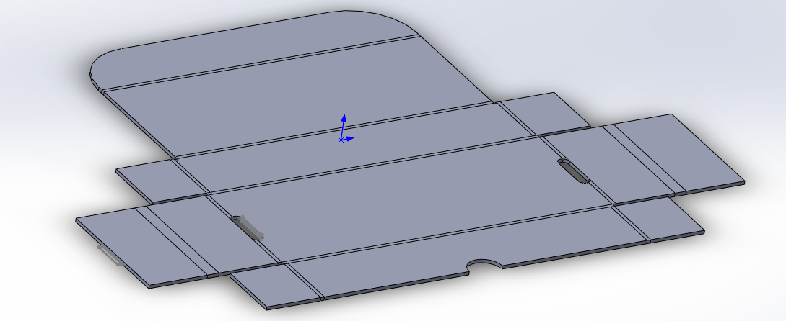
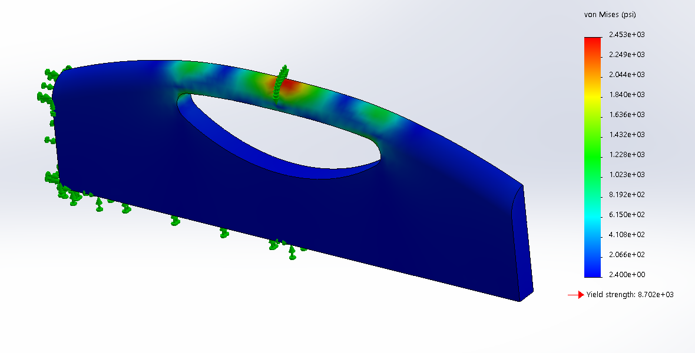

I have vast amounts of time in the modeling program Solidworks and I have been familiarized with
the software AutoCad since highschool. I do not have images of the things I made in highschool 5 years
ago; However, I do have the recent things that I have modeled in SolidWorks.
Listed below are the models that will be showcased below.
- Sheet Metal Box
- Assembly of a Piston
- 3D Rendering of Parts
- Structural Analysis of Parts
Sheet Metal Box

To the left you will find a sheet metal box in its opened position and to the right you will find
the same part has been demonstratively folded to ensure that the sheet metal may be folded the way
intended. Knowing how to do this allows for a very practicle skill of designing a box that starts
flat in an assembly line and is meant to fold.
Assembly of a Piston
This is a picture of a piston that I have created a 3D-model of. This assembly of parts took 14 parts
put mated together to create. This assembly demonstrates motion of a part before actually constructing
the device with costly materials.
3D Rendering of Parts
This is a render that takes the 3D models that I have created in solidworks and processed to look
a bit more realistic for demonstrational purposes to really sell a design. To the right
is a screwdriver that I replicated from a screwdriver I had on my desk and to the left is a
pumpkin that I recreated from a picture online.
3D Rendering of Parts

To the left is a displacement simulation on a fixed object to check to strength of a material and design and
to the right is a stress simulation on the same object. This can be used for multiple points of stress
but the pictures show only one point.